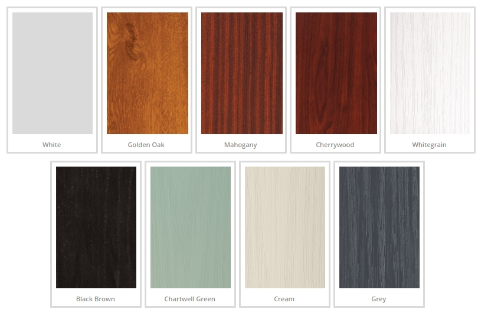

Meet Doora
Doora is a simple, easy to install add-on for your home door. It can detect whether your door is locked/unlocked, as well as open/closed.
Check your door's status from your phone with the Doora app.

A simple add-on to increase your home security and give you the peace of mind you deserve
Doora is a simple, easy to install add-on for your home door. It can detect whether your door is locked/unlocked, as well as open/closed.
Check your door's status from your phone with the Doora app.
.png)
Works with any existing door. Just follow 3 simple steps:
Stick the magnet on your door's latch and put the box on your door frame
Download the Doora app and calibrate the lock
Use the Doora app to easily check if your door is locked when you're away
Doora is an innovative product that uses simple technology to solve a complex problem

Doora is placed on the door frame, in level with the lock, using the provided stick-on velcro. The magnet is positioned on the latch, and calibration is done to differentiate three different states: locked, unlocked and open. Doora also has an alarm system which starts sounding if someone tries to break in. It is equipped with a battery guaranteed to last a minimum of 3 months.
The system has three components: a magnetometer, a ESP8266 chip, and a piezoelectric speaker.
By measuring the magnetic field strength, it determines whether the door is locked, unlocked or open. This data is sent to the app, which displays the current door status and stores the latest history. An alarm sounds if the door is opened without having been unlocked from the app first.
Free shipping. 30-day money back guarantee. 9 different colours.

Only £39
What are you waiting for?
Place Doora on your door frame and download the Doora app. Follow the instructions on the app to calibrate it for the first time. Once this is complete you are ready to use Doora and monitor your door at any time through the app.
Not at all. Doora is placed on the door frame by using a stick-on velcro so that it can easily be installed without damaging your door. This also allows for easy deinstallation as no marks will be present on your door if you ever decide to remove Doora.
Yes, Doora can easily be taken off a door and placed on any door without a problem. Once Doora is placed on a new door, recalibration will have to be redone in the app.
No. Doora has been designed to work only with the magnet you calibrate it with. Any attempt to fool the system with another magnet will cause Doora to switch to "open" state, activating the alarm if configured to do so, and sending a warning to the user via the app.
Doora is powered with batteries which are easily accessible without having to take Doora off your door. They are guaranteed to last for a minimum of 3 months.
In the app you will be able to monitor the status of your door in real time, as well as see the past 24 hours history. It can be configured to send a notification every time the door changes its status, as well as when the alarm goes off. You can also turn on/off the alarm mode, to ensure the alarm doesn't go off when it's you opening the door.
"I've been using Doora for 2 months now, and it has become an essential part of my daily life. Thanks to Doora, I now have more control over my house. Doora gives me an added security that can sometimes become a blessing."
"Doora is an easy to set up, simple to use and reliable product which made my house safer. Now I can monitor my front, back and access to garden doors at any time. Being always in a rush in the morning I can now easily check if I remembered to lock all the doors without having to come all the way back home to do it."
"As a student I live in a rented out room so my landlord could come into my room at any time without me knowing. Now this is not a problem anymore as Doora lets me know if the door has been unlocked or opened while was away."
The minds behind Doora
CEO
COO

CTO
CMO
{kind=link}